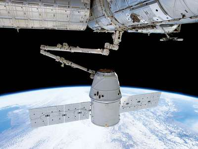

If you wanna to know about Space X company owner. Click here Elon Mask
SpaceX is an American aerospace company founded in 2002 by Elon Musk that helped usher in the era of commercial spaceflight. Its name in full is Space Exploration Technologies Corporation.

SpaceX’s first rocket was the Falcon 1, a two-stage liquid-fueled craft designed to send small satellites into Earth orbit. The Falcon 1 was significantly less expensive to build and operate than its competitors partly because of the SpaceX-developed Merlin engine. A Falcon entered Earth orbit successfully in 2008 for the first time.
On May 22, 2012, Musk and SpaceX made history when the company launched its Falcon 9 rocket into space with an unmanned capsule. The vehicle was sent to the International Space Station with 1,000 pounds of supplies for the astronauts stationed there, marking the first time a private company had sent a spacecraft to the International Space Station. Of the launch, Musk was quoted as saying, "I feel very lucky. ... For us, it's like winning the Super Bowl."
In December 2013, a Falcon 9 successfully carried a satellite to geosynchronous transfer orbit, a distance at which the satellite would lock into an orbital path that matched the Earth's rotation. In February 2015, SpaceX launched another Falcon 9 fitted with the Deep Space Climate Observatory (DSCOVR) satellite, aiming to observe the extreme emissions from the sun that affect power grids and communications systems on Earth.
In March 2017, SpaceX saw the successful test flight and landing of a Falcon 9 rocket made from reusable parts, a development that opened the door for more affordable space travel.
A setback came in November 2017, when an explosion occurred during a test of the company's new Block 5 Merlin engine. SpaceX reported that no one was hurt, and that the issue would not hamper its planned rollout of a future generation of Falcon 9 rockets.
The company enjoyed another milestone moment in February 2018 with the successful test launch of the powerful Falcon Heavy rocket. Armed with additional Falcon 9 boosters, the Falcon Heavy was designed to carry immense payloads into orbit and potentially serve as a vessel for deep space missions. For the test launch, the Falcon Heavy was given a payload of Musk's cherry-red Tesla Roadster, equipped with cameras to "provide some epic views" for the vehicle's planned orbit around the sun.